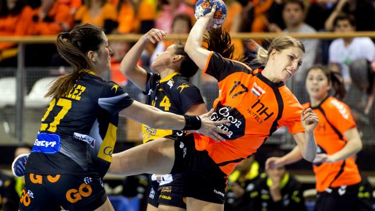

Handbalsters verslaan Spanje en doen goede zaken in strijd om EK-ticket
De Nederlandse handbalsters hebben in hun eerste interland na het WK het thuispubliek verwend met een overtuigende zege. De succesploeg van bondscoach Henk Groener, die in december met zilver terugkeerde uit Denemarken, won in Almere van Spanje met 31-21. Bij rust leidde Oranje met 13-10.
Door die overwinning nam het vrouwenteam resoluut de leiding in de kwalificatiegroep voor het EK in 2016. Komende zaterdag is de uitwedstrijd in Spanje. De nummers één en twee in de groep plaatsen zich rechtstreeks voor het EK in Zweden.
Het weekeinde daarna is het olympisch kwalificatietoernooi in Metz, waar Nederland zijn eerste deelname aan de Olympische Spelen kan afdwingen.
Topschutter in de Nederlandse ploeg was Danick Snelder met zeven treffers. Nycke Groot scoorde zes keer. Doelvrouw Tess Wester maakte een doelpunt in de slotminuut. Oranje begon veelbelovend tegen de Spaanse ploeg, die in het verleden toch vaak Nederland de baas was. Het wervelde bij tijd en wijle in de aanval, defensief stond het goed. Met fraaie scores van onder anderen Laura van der Heijden, Danick Snelder en Angela Malestein liep de ploeg uit naar een 11-7-voorsprong.
Fouten
Daarna stokte de productie. Het spel liep eventjes minder soepel en Spanje, dat weliswaar veel fouten maakte, kon aanhaken. Bij rust leidde de ploeg van Groener wel met 13-10, mede dankzij een echt doorzettersdoelpunt van publiekslieveling Estavana Polman.
Nycke Groot gaf de thuisploeg met een hattrick nieuw elan in de tweede helft. Nederland breidde de voorsprong uit van 23-16 naar 29-19, een marge van tien treffers. Snelder was in die fase bijzonder sterk op de cirkel. Op doel grossierde Wester in reddingen. Alleen de hoekspeelsters waren wat minder gelukkig in de afwerking.
Niettemin was Nederland veel sterker dan Spanje en toonde het de ware klasse van een mondiaal topteam.